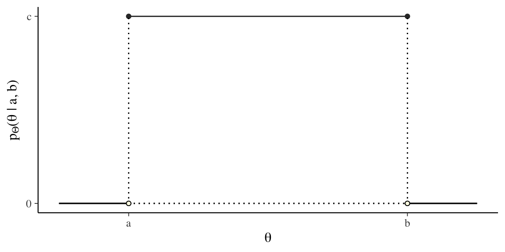

Data Science per psicologi
2021-10-10
Capitolo 1 Funzione di densità di probabilità
Finora abbiamo considerato solo variabili casuali discrete, cioè variabili che assumono solo valori interi. Ma cosa succede se vogliamo usare variabili casuali per rappresentare lunghezze o volumi o distanze una qualsiasi delle altre proprietà continue nel mondo fisico (o psicologico)? È necessario generalizzare l’approccio usato finora.
Le variabili casuali continue assumono valori reali. L’insieme dei numeri reali è non numerabile perché è più grande dell’insieme degli interi.1 Le leggi della probabilità sono le stessa per le variabili casuali discrete e quelle continue. La nozione di funzione di massa di probabilità, invece, deve essere sostituita dal suo equivalente continuo, ovvero dalla funzione di densità di probabilità. Lo scopo di questo Capitolo è quello di chiarire il significato di questa nozione, usando un approccio basato sulle simulazioni.
1.1 Spinner e variabili casuali continue uniformi
Consideriamo il seguente esperimento casuale. Facciamo ruotare ad alta velocità uno spinner simmetrico imperniato su un goniometro e osserviamo la posizione in cui si ferma (individuata dall’angolo acuto con segno tra il suo asse e l’asse orizzontale del goniometro). Chiamiamo \(\Theta\) la variabile casuale “pendenza dello spinner.” Nella trattazione seguente useremo i gradi e, di conseguenza, \(\Theta \in [0, 360]\).
Figura 1.1: Uno spinner che riposa a 36 gradi, o il dieci percento del percorso intorno al cerchio. La pendenza dello spinner può assumere qualunque valore tra 0 e 360 gradi.
Cosa implica per \(\Theta\) dire che lo spinner è simmetrico? Possiamo dire che, in ciascuna prova, la rotazione dello spinner produce un angolo qualunque da 0 a 360 gradi. In altri termini, un valore \(\Theta\) compreso tra 0 e 36 gradi ha la stessa probabilità di essere osservato di un valore \(\Theta\) compreso tra 200 e 236 gradi. Inoltre, poiché 36 gradi è un decimo del percorso intorno al cerchio, la probabilità di ottenere un qualsiasi intervallo di 36 gradi sarà sempre uguale al 10%. Ovvero
\[ \mbox{P}[0 \leq \Theta \leq 36] \ = \ \frac{1}{10} \] e
\[ \mbox{P}[200 \leq \Theta \leq 236] \ = \ \frac{1}{10}. \]
È importante notare che le considerazioni precedenti non si riferiscono al fatto che \(\Theta\) può assumere uno specifico valore, ma piuttosto alla probabilità di osservare \(\Theta\) in un particolare intervallo di valori. In generale, la probabilità che la pendenza \(\Theta\) dello spinner cada in intervallo è la frazione del cerchio rappresentata dall’intervallo, cioè,
\[ \mbox{P}[\theta_1 \leq \Theta \leq \theta_2] = \frac{\theta_2 - \theta_1}{360}, \qquad 0 \leq \theta_1 \leq \theta_2 \leq 360. \] La ragione di questo è che le variabili casuali continue non hanno una massa di probabilità. Invece, una massa di probabilità viene assegnata alla realizzazione della variabile casuale in un intervallo di valori.
1.1.1 Il paradosso delle variabili casuali continue
Nel nostro esempio, la pendenza dello spinner è esattamente 36 gradi; ma avrebbe potuto anche essere 36.0376531 gradi o qualunque altro valore in quell’intorno. Qual è la probabilità che la pendenza dello spinner sia esattamente 36? Paradossalmente, la risposta è zero:
\[ \mbox{P}[\Theta = 36] = 0. \]
Infatti, se la probabilità di un qualunque valore fosse maggiore di zero, ogni altro possibile valore dovrebbe avere la stessa probabilità, dato che abbiamo assumiamo che tutti i valori \(\Theta\) sono egualmente probabili. Ma se poi andiamo a sommare tutte queste probabilità il totale diventerà maggiore di uno, il che non è possibile.
Nel caso delle variabili casuali continue dobbiamo dunque rinunciare a qualcosa, e quel qualcosa è l’idea che, in una distribuzione continua, ciascun valore puntuale della variabile casuale possa avere una massa di probabilità maggiore di zero. Il paradosso sorge perché una realizzazione della variabile casuale conrtinua produce sempre un qualche numero, ma ciscuno di tali numeri ha probabilità nulla.
1.2 La funzione di ripartizione per una variabile casuale continua
Supponiamo che \(\Theta \sim \mbox{uniform}(0, 360)\) sia la pendenza dello spinner. La funzione di ripartizione (ovvero, la distribuzione cumulativa) è definita esattamente come nel caso delle variabili casuali discrete:
\[ F_{\Theta}(\theta) = \mbox{P}[\Theta \leq \theta]. \]
Cioè, è la probabilità che la variabile casuale \(\Theta\) assuma un valore minore di o uguale a \(\theta\). In questo caso, poiché si presume che lo spinner sia simmetrico, la funzione di distribuzione cumulativa è
\[ F_{\Theta}(\theta) = \frac{\theta}{360}. \] Questa è una funzione lineare di \(\theta\), cioè \(\frac{1}{360} \times \theta\), come indicato dal grafico della figura 1.2.
Figura 1.2: Funzione di distribuzione cumulativa per l’angolo \(\theta\) (in gradi) risultante da una rotazione di uno spinner simmetrico. La linea tratteggiata mostra il valore a 180 gradi, che corrisponde ad una probabilità di 0.5, e la linea tratteggiata a 270 gradi, che corrisponde ad una probabilità di 0.75.
Possiamo verificare questo risultato mediante simulazione. Per stimare la funzione di ripartizione, simuliamo \(M\) valori \(\theta^{(m)}\) e poi li ordiniamo in ordine crescente.
M <- 1000
theta <- runif(M, 0, 360)
theta_asc <- sort(theta)
prob <- (1:M) / M
unif_cdf_df <- data.frame(
theta = theta_asc,
prob = prob
)
unif_cdf_plot <-
unif_cdf_df %>%
ggplot(aes(x = theta, y = prob)) +
geom_line() +
scale_x_continuous(breaks = c(0, 90, 180, 270, 360)) +
scale_y_continuous(breaks = c(0, 0.25, 0.5, 0.75, 1.0)) +
xlab(expression(theta)) +
ylab(expression(F[Theta](theta)))
unif_cdf_plotFigura 1.3: Grafico della funzione di ripartizione di una variabile casuale \(\Theta\) che rappresenta il risultato di una rotazione di uno spinner simmetrico. Come previsto, tale funzione è una semplice funzione lineare perché la variabile sottostante \(\Theta\) ha una distribuzione uniforme.
Anche con M = 1000, tale grafico è praticamente indistinguibile da quello prodotto per via analitica.
Come nel caso delle variabili casuali discrete, la funzione di ripartizione può essere utilizzata per calcolare le probabilità che la variabile casuale assuma valori in un intervallo. Ad esempio
\[\begin{align} \mbox{P}[180 < \Theta \leq 270] &= \mbox{P}[\Theta \leq 270] \ - \ \mbox{P}[\Theta \leq 180] \notag\\ &= F_{\Theta}(270) - F_{\Theta}(180)\notag\\ &= \frac{3}{4} - \frac{1}{2} \notag\\ &= \frac{1}{4}. \end{align}\]
1.3 La distribuzione uniforme
Dopo avere visto come generare numeri casuali uniformi da 0 a 360, ora consideriamo una variabile casuale che assume valori nell’intervallo da 0 a 1. Chiamiamo sempre \(\Theta\) tale variabile casuale, ma assumiamo ora che abbia una distribuzione continua uniforme sull’intervallo [0, 1]:
\[ \Theta \sim Uniform(0, 1). \] Poiché le probabilità assumono valori nell’intervallo [0, 1], possiamo pensare a \(\Theta\) come ad un valore di probabilità preso a caso in ciascuna realizzazione dell’esperimento casuale.
La distribuzione uniforme è la più semplice delle distribuzioni di densità di probabilità. Per chiarire le proprietà di tale distribuzione, iniziamo con una simulazione e generiamo 10,000 valori casuali di \(\Theta\). I primi 10 di tali valori sono stampati qui di seguito:
set.seed(1234)
M <- 10000
logit <- function(x) log(x / (1 - x))
theta <- runif(M)
alpha <- logit(theta)
for (m in 1:10) {
print(alpha[m])
}
#> [1] -2.053458
#> [1] 0.4993195
#> [1] 0.4442646
#> [1] 0.5039172
#> [1] 1.822914
#> [1] 0.5767125
#> [1] -4.647369
#> [1] -1.193965
#> [1] 0.6905252
#> [1] 0.05702001Creaiamo ora un istogramma che descrive la distribuzione delle 10,000 realizzazioni \(\Theta\) che abbiamo trovato:
df_prob_unif <- data.frame(theta = theta)
unif_prob_plot <-
ggplot(df_prob_unif, aes(theta)) +
geom_histogram(
binwidth = 1 / 34, center = 1 / 68, color = "black",
size = 0.25
) +
scale_x_continuous(breaks = c(0, 0.25, 0.5, 0.75, 1)) +
scale_y_continuous(lim = c(0, 1300), breaks = c(500, 1000)) +
xlab(expression(paste(Theta, " ~ Uniform(0, 1)")))
unif_prob_plotFigura 1.4: Istogramma di \(10\,000\) realizzazioni \(\Theta \sim \mbox{Uniform}(0, 1)\).
È chiaro che, all’aumentare del numero delle realizzazioni \(\Theta\), il profilo dell’istogramma tenderà a diventare una linea retta. Ciò significa che la funzione di densità di una variabile casuale uniforme continua è una costante. Cioè, se \(\Theta \sim \mbox{Uniform} (a, b)\), allora \(p_{\Theta}(\theta) = c\), dove \(c\) è una costante.
uniform_pdf_df <- data.frame(y = c(0, 1), p_y = c(1, 1))
uniform_pdf_plot <-
ggplot(uniform_pdf_df, aes(x = y, y = p_y)) +
geom_line(size = 0.5, color = "#333333") +
geom_point(size = 1.5, color = "#333333") +
scale_x_continuous(breaks = c(0, 1), labels = c("a", "b")) +
scale_y_continuous(
lim = c(0, 1), breaks = c(0, 1),
labels = c("0", "c")
) +
xlab(expression(theta)) +
ylab(expression(paste(p[Theta], "(", theta, " | a, b)"))) +
geom_segment(aes(x = 0, y = 0, xend = 0, yend = 1), linetype = "dotted") +
geom_segment(aes(x = 1, y = 0, xend = 1, yend = 1), linetype = "dotted") +
geom_segment(aes(x = 0, y = 0, xend = 1, yend = 0), linetype = "dotted") +
geom_segment(aes(x = -0.25, y = 0, xend = 0, yend = 0)) +
geom_segment(aes(x = 1, y = 0, xend = 1.25, yend = 0)) +
geom_point(aes(x = 0, y = 0), size = 1.5, shape = 21, fill = "#ffffe6") +
geom_point(aes(x = 1, y = 0), size = 1.5, shape = 21, fill = "#ffffe6")
uniform_pdf_plot
Dal grafico vediamo che l’area sottesa alla funzione di densità è \((b - a)\times c\). Dato che tale area deve essere unitaria, ovvero, \((b - a) \times c = 1\), possiamo trovare \(c\) dividendo entrambi i termini per \(b - a\),
\[ c = \frac{\displaystyle{1}}{\displaystyle b - a}. \]
Ovvero, se \(\Theta \sim \mbox{Uniform}(a, b)\), allora
\[ p_{\Theta}(\theta) = \mbox{Uniform}(\theta \mid a, b), \]
laddove
\[ \mbox{Uniform}(\theta \mid a, b) = \frac{1}{b - a}. \]
In conclusione, la densità di una variabile casuale uniforme continua non dipende da \(\theta\) — è costante e identica per ogni possibile valore \(\theta\).2 Vedremo nel prossimo Paragrafo che, eseguendo una trasformazione su questa variabile casuale uniforme, possiamo creare altre variabili casuali di interesse.
1.4 La trasformazione logit
Supponiamo che \(\Theta\) sia una variabile casuale con una distribuzione continua uniforme sull’intervallo [0, 1], cioè \(\Theta \sim Uniform(0, 1)\). Vedremo ora come, partendo dalla distribuzione uniforme, sia possibile generare una nuova variable casuale la cui funzione di densità si chiama distribuzione logistica.
Data una variabile casuale uniforme continua \(\Theta \in (0, 1)\), possiamo definire i suoi log odds come
\[\begin{equation} \mbox{logit}(\theta) = \log \frac{\theta}{1 - \theta}, \tag{1.1} \end{equation}\]
ovvero come il logaritmo naturale degli odds, \(\frac{\theta}{1 -\theta}\).
Chiameremo
\[ \Phi = \mbox{logit}(\Theta) \]
la variabile casuale le cui realizzazoni sono i logit (log odds) di \(\Theta\).
Per comprendere la distribuzione di \(\Phi\) facciamo nuovamente ricorso alla simulazione. Iniziamo con il generare un certo numero di realizzazioni \(\Theta\) dalle quali otteniamo \(\Phi = \mathrm{logit}(\Theta)\). Mediante un istogramma esaminiamo la distribuzione dei valori \(\Phi\) che abbiamo trovato. Notiamo che, anche se \(\Theta \sim \mbox{Uniform}(0, 1)\), la variabile casuale \(\Phi = \mbox{logit}(\Theta)\) non è distribuita in maniera uniforme. Un’altra caratteristica di \(\Phi\) è che la distribuzione dei suoi valori è simmetrica intorno allo zero. Infine, dall’istogramma vediamo che la distribuzione di \(\Phi\) è quasi completamente contenuta nell’intervallo \(\pm 6\) dall’origine.
df_log_odds <- data.frame(alpha = alpha)
log_odds_plot <-
ggplot(df_log_odds, aes(alpha)) +
geom_histogram(
binwidth = 0.5, color = "black", size = 0.25
) +
scale_x_continuous(
breaks = c(-6, -4, -2, 0, 2, 4, 6)
) +
scale_y_continuous(
lim = c(0, 1300), breaks = c(500, 1000)
) +
xlab(
expression(paste(Phi, " = ", logit(Theta)))
)
log_odds_plotFigura 1.5: Istogramma di \(10\,000\) realizzazioni \(\Theta \sim \mbox{Uniform}(0, 1)\) trasformate mediante la funzione logit \(\Phi = \mbox{logit}(\Theta).\)
Lo zero sulla scala dei logit corrisponde a 0.5 sulla scala delle probabilità, cioè
\[ 0 = \mbox{logit}(0.5), \] o equivalenteente, \[ \mbox{logit}^{-1}(0) = 0.5. \] L’inverso della funzione logit è dato dalla funzione logistica
\[\begin{equation} \mbox{logit}^{-1}(u) = \frac{1}{1 + \exp(-u)}. \tag{1.2} \end{equation}\] Questo non è sorprendente dato che
\[ \mbox{logit}^{-1}(-6) = 0.0025 \] e
\[ \mbox{logit}^{-1}(6) = 0.9975 \] sulla scala delle probabilità.
Possiamo anche fare quello che abbiamo fatto per le distribuzioni uniformi e, mediante simulazione, generare la funzione di ripartizione di \(\Phi\) (figura 1.6).
logit <- function(u) log(u / (1 - u))
M <- 1000
phi <- logit(runif(M))
phi_asc <- sort(phi)
prob <- (1:M) / M
logistic_cdf_df <- data.frame(phi = phi_asc, prob = prob)
logistic_cdf_plot <-
ggplot(logistic_cdf_df, aes(x = phi, y = prob)) +
geom_line() +
geom_hline(
yintercept = 1, size = 0.3, linetype = "dashed",
color = "#333333"
) +
geom_hline(
yintercept = 0, size = 0.3, linetype = "dashed",
color = "#333333"
) +
geom_vline(
xintercept = 0, size = 0.3, linetype = "dotted",
color = "#333333"
) +
geom_hline(
yintercept = 0.5, size = 0.3, linetype = "dotted",
color = "#333333"
) +
scale_x_continuous(
lim = c(-7, 7),
breaks = c(-6, -4, -2, 0, 2, 4, 6)
) +
scale_y_continuous(breaks = c(0, 0.25, 0.5, 0.75, 1.0)) +
xlab(expression(phi)) +
ylab(expression(F[Phi](phi)))
logistic_cdf_plotFigura 1.6: Grafico della funzione di distribuzione cumulativa di una variabile casuale \(\Phi = \mbox{logit}(\Theta)\) che rappresenta la trasformazione logaritmica di una variabile casuale distribuita uniformemente \(\Theta \sim \mbox{uniform }(0, 1)\). La curva ha una forma sigmoidale. Gli asintoti a 0 e 1 sono indicati con linee tratteggiate; la curva è simmetrica intorno allo 0 sull’asse \(x\) e a 0.5 sull’asse \(y\), come evidenziato dalle linee punteggiate.
Il risultato è una funzione a forma sigmoidale i cui valori sono compresi tra 0 e 1, con asintoti a uno quando \(\theta\) tende a \(+\infty\) e a zero quando \(\theta\) tende a \(-\infty\). In corrispondenza di \(\Phi\) = 0 troviamo il valore 0.5. La curva prodotta dalla simulazione è una curva molto nota chiamata funzione logistica. In termini analitici, la funzione logistica viene espressa come segue:
\[\begin{equation} F_{\Theta}(\theta) = \mathrm{logit}^{-1}(\theta) = \frac{1}{1 + \exp(-\theta)}, \tag{1.3} \end{equation}\]
con \(\theta \in [0, 1].\)
1.5 Dagli istogrammi alle densità
Non esiste l’equivalente di una funzione di massa di probabilità per le variabili casuali continue. Esiste invece una funzione di densità di probabilità la quale, nei termini di una simulazione, può essere concepita nel modo seguente: avendo a disposizione un numero enorme di casi, quando l’intervallo \(\Delta\) di ciascuna classe \(\rightarrow\) 0, la spezzata tende a diventare una curva continua. Tale curva continua \(f(x)\) è detta funzione di densità di probabilità.
Come si trasformano gli istogrammi all’aumentare del numero di osservazioni? Nei grafici seguenti, la numerosità cresce da \(10\) a \(1\,000\,000\).
set.seed(1234)
df_log_odds_growth <- data.frame()
for (log10M in 1:6) {
M <- 10^log10M
alpha <- logit(runif(M))
df_log_odds_growth <- rbind(
df_log_odds_growth,
data.frame(
alpha = alpha,
M = rep(sprintf("M = %d", M), M)
)
)
}
log_odds_growth_plot <-
df_log_odds_growth %>%
ggplot(aes(alpha)) +
geom_histogram(color = "black", bins = 75) +
facet_wrap(~M, scales = "free") +
scale_x_continuous(
lim = c(-8.5, 8.5), breaks = c(-5, 0, 5)
) +
xlab(expression(paste(Phi, " = ", logit(Theta)))) +
ylab("proportion of draws") +
theme(
axis.text.y = element_blank(),
axis.ticks.y = element_blank(),
panel.spacing.x = unit(2, "lines"),
panel.spacing.y = unit(2, "lines")
)
log_odds_growth_plotFigura 1.7: Istogramma di \(M\) campioni casuali \(\Theta \sim \mbox{Uniform}(0, 1)\) trasformati in valori \(\Phi = \mbox{logit}(\Theta).\) Il profilo limite dell’istogramma è evidenziato nella figura in basso a destra che è stata costruita usando \(1\,000\,000\) di osservazioni.
In un istogramma, l’area di ciascuna barra è proporzionale alla frequenza relativa delle osservazioni in quel’intervallo. Perché tutti gli intervalli hanno la stessa ampiezza, anche l’altezza di ciascuna barra sarà proporzionale alla frequenza relativa delle osservazioni in quel’intervallo.
Nella simulazione, possiamo pensare all’area di ciascuna barra dell’istogramma come alla stima della probabilità che la variabile casuale assuma un valore compreso nell’intervallo considerato. All’aumentare del numero \(M\) di osservazioni, le probabilità stimate si avvicinano sempre di più ai veri valori della probabilità. All’aumentare del numero degli intervalli (quando l’ampiezza \(\Delta\) dell’intervallo \(\rightarrow\) 0), il profilo dell’istogramma tende a diventare una curva continua. Tale curva continua è la funzione di densità di probabilità della variabile casuale. Per l’esempio presente, con \(M =1\,000\,000\), otteniamo il grafico riportato nella figura 1.8.
set.seed(1234)
M <- 1e6
alpha <- logit(runif(M))
density_limit_df <- data.frame(alpha = alpha)
density_limit_plot <-
density_limit_df %>%
ggplot(aes(alpha)) +
geom_histogram(
stat = "density", n = 75, color = "black",
size = 0.15
) +
stat_function(
fun = dlogis,
args = list(location = 0, scale = 1),
col = "black",
size = 0.3
) +
scale_x_continuous(
lim = c(-9, 9),
breaks = c(-6, -4, -2, 0, 2, 4, 6)
) +
xlab(
expression(paste(Phi, " = ", logit(Theta)))
) +
ylab("frequenza relativa") +
theme(
axis.text.y = element_blank(),
axis.ticks.y = element_blank()
)
density_limit_plotFigura 1.8: Istogramma di \(M = 1\,000\,000\) campioni casuali \(\Theta \sim \mbox{Uniform}(0,1)\) trasformati in valori \(\Phi = \mbox{logit}(\Theta)\). La spezzata nera congiunge i punti centrali superiori delle barre dell’istogramma. Nel limite, quando il numero di osservazioni e di barre tende all’infinito, tale spezzata approssima la funzione di densità di probabilità della variabile casuale.
Nella statistica descrittiva abbiamo già incontrato una rappresentazione che ha lo stesso significato della funzione di densità, ovvero il kernel density plot. La stima della densità del kernel (KDE), infatti, è un modo non parametrico per stimare la funzione di densità di probabilità di una variabile casuale.
Considerazioni conclusive
Sia \(y\) una variabile casuale continua con funzione di densità di probabilità \(p(y)\). Allora \(p(y)\) ha le seguenti proprietà:
- \(p(y) \geq 0\), ovvero, l’ordinata della funzione di densità è 0 o positiva;
- \(\int_y p(y) dy = 1\), ovvero, l’area sottesa dalla \(p(y)\) è unitaria3;
- \(P(a < y < b) = \int_a^b p(y) dy\), se \(a \leq b\), ovvero, l’area sottesa dalla \(p(y)\) tra due punti \(a\) e \(b\) corrisponde alla probabilità che la v.c. \(y\) assuma un valore compresto tra questi due estremi.
Interpretazione. È possibile che \(p(y) > 1\), quindi una densità di probabilità non può essere interpretata come una probabilità. Piuttosto, la densità \(p(y)\) può essere utilizzata per confrontare la plausibilità relativa di diversi valori \(Y\). Considerata una variabile casuale \(Y\) di cui è disponibile un insieme di realizzazioni, tanto maggiore è \(p(y_k)\) rispetto a \(p(y_l)\), tanto più grande sarà la nostra certezza che valori nell’intorno di \(y_k\) verranno osservati con maggiore frequenza di valori nell’intorno di \(y_l\).
Georg Cantor dimostrò che era impossibile mappare uno a uno i reali negli interi, dimostrando così che l’insieme dei reali è non numerabile.↩︎
Per comodità, possiamo assumere che i valori impossibili di \(\theta\) abbiano una densità uguale a zero.↩︎
Per quel che riguarda la notazione dell’integrale, ovvero \(\int_x dx\), rimando alla discussione di S.P. Thompson: https://calculusmadeeasy.org/1.html↩︎